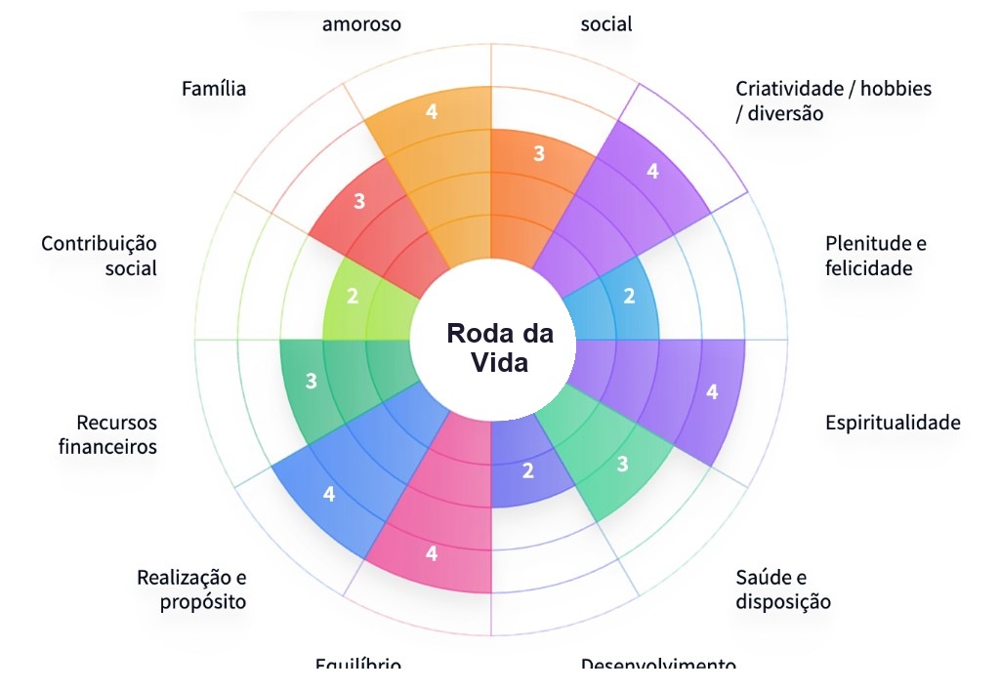

1
O propósito
A Roda da Vida mostra o que importa nesta fase. Propósito muda: com filhos, mudança de trabalho ou outra virada, as áreas se reordenam. O mapa acompanha você.
Beta fechado
Organize seus hábitos de acordo com seu propósito atual e tenha um companheiro virtual alimentado pela sua disciplina real de todos os dias.
App gratuito · Vagas limitadas neste ciclo fechado

A ordem é linear: primeiro você vê o momento da vida, depois pratica, depois colhe o que a constância gera, e o companheiro reflete tudo isso.
A Roda da Vida mostra o que importa nesta fase. Propósito muda: com filhos, mudança de trabalho ou outra virada, as áreas se reordenam. O mapa acompanha você.
Clareza sem execução não basta. Você transforma o mapa em hábitos e avança com Kaizen: passos pequenos, diários, reais.
O que você cumpre vira progresso visível: ritmo, XP e o que o app devolve pela constância. Não é fantasia de checklist.
O personagem não se escolhe: ele surge. Espelho leve da sua disciplina, mostra quando os hábitos estão firmes e quando estão ruins.


Depois da Roda, o dia a dia: você registra o que fez e vê o ritmo no mês. A prática sai do mapa e entra na rotina.
Os hábitos nascem do propósito desta fase, não de listas genéricas copiadas de outra pessoa.
Meditação, treino, leitura, o que for seu. Horas e ritmo aparecem com o que você realmente cumpriu.
Constância de ferro, com leveza o bastante para você continuar. O objetivo é avançar, não se punir.
Progresso que você sente no corpo da rotina e no vínculo com o Iki. A constância gera retorno. A intenção sozinha, não.
A Roda atualiza o retrato da fase. Você vê onde avançou e o que ainda pede atenção.
Cada ato cumprido alimenta o progresso. Streak e XP acompanham o que foi feito, não o que ficou no plano.
O companheiro reflete o estado dos hábitos. Firmes ou ruins: você lê no visual, sem planilha.
Ronin, Coruja, Gueixa, Dragão e os demais. Cada um aparece no caminho e evolui com a disciplina que você cumpre no dia a dia.
 Ronin
Ronin
 Coruja
Coruja
 Gueixa
Gueixa
 Dragão
Dragão
 Bonsai
Bonsai
 Lobo
Lobo
 Cavalo
Cavalo
O app une clareza sobre o momento da vida, disciplina para avançar e um companheiro que mostra, sem planilha, se você está bem ou não.
A Roda da Vida deixa visível o que importa agora. Propósito não é frase fixa: muda com a fase da vida. Quem tem filhos, por exemplo, reordena áreas inteiras. O app acompanha esse mapa em movimento.
Clareza sem execução não leva a lugar nenhum. O IkiApp ajuda a transformar o que a Roda mostrou em hábitos concretos e a avançar com Kaizen: passos pequenos, consistentes, de verdade.
A constância precisa ser séria, sem virar castigo. O personagem existe para você cuidar do seu ritmo com leveza: um espelho visual de quando os hábitos estão firmes e de quando estão ruins.
pessoas neste ciclo fechado
áreas do propósito na Roda da Vida
Ikis que podem surgir no caminho
app gratuito, sem assinatura
Queremos acompanhar de perto quem entra primeiro: propósito, disciplina e o Iki funcionando de verdade no dia a dia. Por isso o acesso é limitado a 100 pessoas.
Deixe seu e-mail. Se ainda houver lugar, a gente chama você.